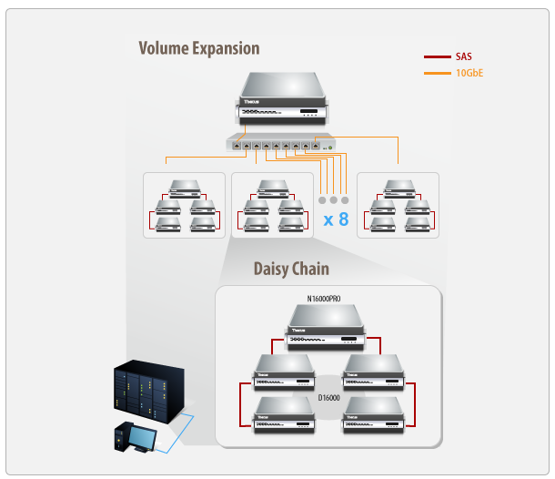
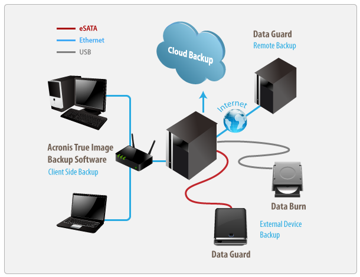
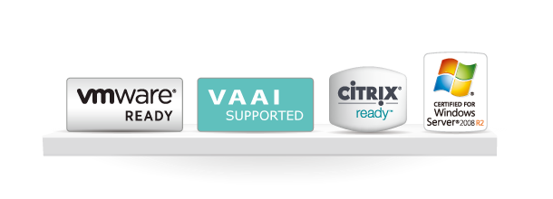
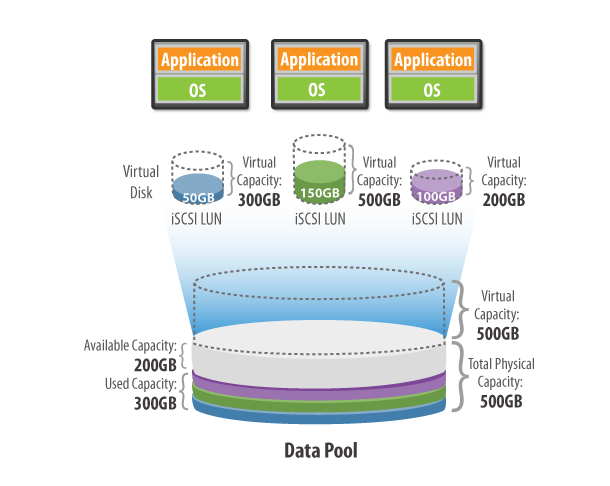

Storage Solution |
SCALABILITY |

1. Volume Expansion
Dynamic Volume Expansion is a key solution for enterprises and heavy data users who require large amounts of storage
with the option of easy growth. By incorporating a 10GbE switch, businesses have the flexibility to add up to eight
target devices in a single NAS stack.
2. Daisy-Chaining
With daisy chaining, users now have the ability to cost effectively increase their storage volume while maintaining
fast transfers. To set up a daisy chain, one master NAS unit is installed as a controller with up to four DAS linked
as slaves. SAS cables are then used to link the units together in order to ensure rapid speeds. The ability to reach
tremendous capacities while saving nearly 30% on hardware costs (versus traditional storage architecture) is something
truly groundbreaking in the industry.
3. Stackable
NAS are well prepared for new data and performance demands, with future-looking designs that meet even the most
demanding scenarios. With both RAID and iSCSI expansion available in a single NAS, adding more or larger disks to
expand your available data capacity is easy. Although this is a very useful and important function, users are still
limited by the capacity of their NAS. So by stacking your NAS, users are able to extra NAS and increase their
capacity exponentially, therefore giving you a revolutionary scale of adaptability.
|
BACKUP ARCHIVING |

1. Real-Time Remote Replication (RTRR)
This innovative backup feature allows users to backup files instantly to their NAS, external hard drive, or remote
NAS. RTRR saves time as it is able to back up data immediately.
2. Data Guard
Data Guard Backup Solution is the ultimate NAS module as it provides both local and remote support. Currently, it
allows for data to be backed up across RAID volumes, external USB drives, and eSATA. Data Guard also uses innovative
technology to sync data across the network to other NAS and servers.
3. Data Burn
NAS data can now be burned directly to CD, DVD, and Blu-ray discs. This hassle-free module makes burning data to a
disk effortless. Burning ISO image files is also supported. Whether you’re managing audio, media, or essential files,
Data Burn copies information quickly while significantly improving backup efficiency.
4. Acronis
Thecus brings the best to the table with Acronis advanced backup software. Back-up all your data with One-Click
Protection or pick and choose your most important files. Acronis sports a slick interface, user-friendly design,
and comprehensive features designed to keep your data safe.
5. Cloud
Backing up data to the cloud allows businesses to access their data from anywhere in the world. All Thecus® devices
thus support easy data downloading and uploading as the cloud is accessible wherever there is an internet connection.
|
ADVANCED VIRTUALIZATION |

1. VMware ESXi 5.5 Certified
Business users can utilize their NAS together with VMware® servers to build virtual infrastructure and create virtual
machines (VMs). On virtual machines, different operating systems can be set up and numerous applications can be
installed on each OS so as to carry out various tasks. A Thecus NAS with a VMware® server will form a unified pool of
resources that can be used by VMs to run applications. Compared with traditional single servers with single sets of
applications models, virtual infrastructures significantly reduce operating costs, lower electricity consumption, and
increase overall hardware resource utilization.
2. VMware ESXi VAAI
Users of popular virtualization hypervisor, ESXI, can now appreciate full support for VAAI. vSphere storage APIs for
Array Integration allows storage operations in the virtualization platform to be offloaded to networked storage,
improving overall performance of the Virtualized Desktop Infrastructure (VDI).
3. Citrix Ready
Citrix® XenServer™ is the only enterprise-class, cloud-proven server virtualization platform that delivers critical
features such as live migration and centralized multi-server management at no cost. Thecus Citrix Ready NAS have all
passed the Citrix verification process.
4. Windows Server 2008 R2 Hyper-V
Designed for line-of-business and mission-critical applications, the Certified for Windows Server 2008 R2 logo
demonstrates that Thecus enterprise solution meets Microsoft's highest technical bar for stability, security,
reliability, availability, Windows fundamentals, and platform compatibility.
5. iSCSI Thin Provisioning
iSCSI Thin Provisioning allows administrators to create up to 5 iSCSI Thin-Provision targets under one iSCSI
Thin-Provision volume. These iSCSI targets will then share physical storage space from the iSCSI Thin-Provision
volume. iSCSI Thin-Provisioning prevents administrators from over-provisioning physical storage space before it is
actually needed, thus greatly reducing capital spending on storage for businesses of all scales.

|